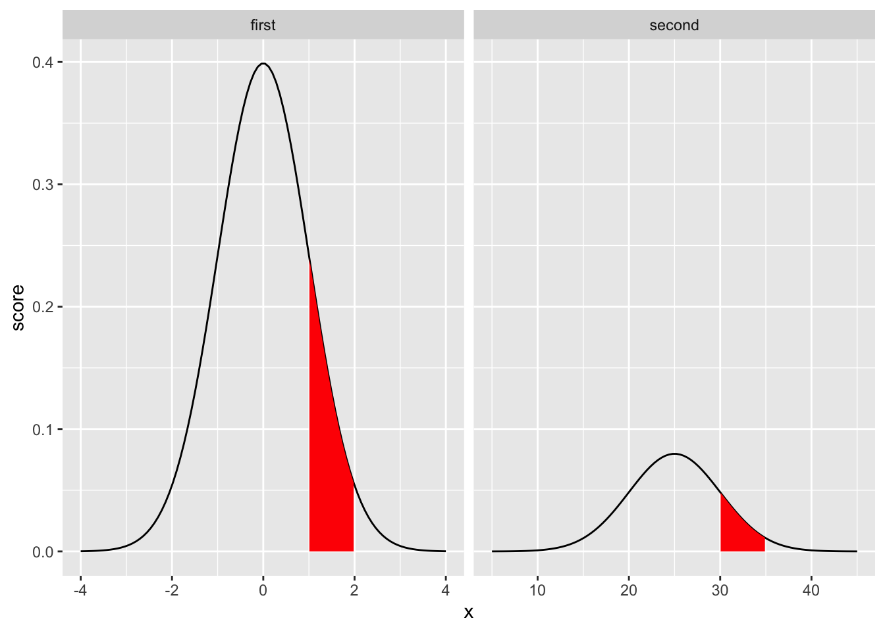

8 Z tests
“10/8/2020 | Last Compiled: 2020-12-14”
8.1 Reading
Vokey & Allen,27 Chapter 12; Abdi, Edelman, Dowling, & Valentin28 Appendix D
8.3 Review and Reminder
In previous labs we introduced the concepts of 1) the normal distribution and 2) sampling distributions. We relate these concepts here. Specifically, the central limit theorem shows that sampling distributions of the mean generally have the shape of a normal distribution. As a result, the properties of normal distributions can be substituted for the properties of sampling distributions in the process of statistical inference.
Normal distributions and their assumptions routinely appear across many of the remaining statistical tests (e.g., t-tests, ANOVAs, linear regression, etc.) discussed across this course. So, it is important to be comfortable with basic properties of the normal distribution.
For example, as a reminder, the normal distribution has two parameters, the mean and standard deviation. For example, the formula for the normal distribution (probability density function) is:
\(f(x) = \frac{1}{\sigma \sqrt{2\pi}}e^{-\frac{1}{2}(\frac{x-u}{\sigma})^2}\)
and, the only two free parameters are \(u\) (mean), and \(sigma\) (standard deviation). Below I calculating probability density for a particular score using this formula in R, and I show the answer is the same as dnorm().
x <- 1
u <- 0
sigma <- 1
1/(sigma*sqrt(2*pi)) * exp(1)^(-.5*((x-u)/sigma)^2)
#> [1] 0.2419707
dnorm(1,0,1)
#> [1] 0.2419707The second reminder is that all normal distributions have the same shape. It is important to understand what “having the same shape” means. Let’s look at two different normal distributions. The first one has mean = 0, and sd = 1. The second has mean = 25, and sd = 5. The two graphs appear to show different shapes, the first is taller and narrower than the second.
first_one <- dnorm(seq(-4,4,length.out=100),0,1)
second_one <- dnorm(seq(5,45,length.out=100),25,5)
plot_df <- data.frame(score=c(first_one,second_one),
x = c(seq(-4,4,length.out=100),seq(5,45,length.out=100)),
zscore = c(seq(-4,4,length.out=100),(seq(5,45,length.out=100)-25)/5),
dist = rep(c("first","second"),each=100))
library(ggplot2)
ggplot(plot_df, aes(y=score,x=x))+
geom_line()+
facet_wrap(~dist)However, the x-axes are different for each of the graphs. If we allow the x-axes to vary freely, so that we can “zoom” into each distribution in the same way, we now see:
ggplot(plot_df, aes(y=score,x=x))+
geom_line()+
facet_wrap(~dist, scales="free_x")Again, these distributions have a similar shape, but “seemingly” not exactly the same shape…the second one is shorter and more spread out. Nevertheless, the shape is still EXACTLY THE SAME, in one important way. Specifically, the probability of getting scores in between particular ranges, expressed as standard deviations, is the same.
These are probability distribution functions, so the area under the curve represents all possible outcomes. And, the area under the curve between a range of values (relative to the total area), represents the probability of observing values between the range. The crucial point is that when we look at comparable ranges of standard deviations for ANY normal distribution, we always get the same probabilities.
For example, consider the range between 1 and 2 in the first graph (mean = 0, sd = 1). This is comparable to the range 30 and 35 in the second graph (mean = 25, sd =5). Both represent the interval between 1 and 2 standard deviations. This interval is shaded in red below.
library(dplyr)
ggplot(plot_df, aes(y=score,x=x))+
geom_line()+
facet_wrap(~dist, scales="free_x")+
geom_ribbon(data = plot_df %>%filter(zscore >= 1,
zscore <= 2),
fill = "red",
aes(ymin=0,ymax=score))
To calculate the area of the shaded regions relative to the total area properly we should perform an integration. However, let’s skip that part, and do something quick in R. For example, we could sum up all of the numbers in our two vectors first_one and second_one, and this would approximate the “total area.” Then, for each vector, we could sum up the numbers (probability density values) in each range. Then we could divide the sums to approximate the probability, and then check to see if they are the same.
library(dplyr)
plot_df %>%
filter(dist == "first",
x > 1,
x <= 2) %>%
select(score) %>%
sum()/sum(first_one)
#> [1] 0.1443879
plot_df %>%
filter(dist == "second",
x > 30,
x <= 35) %>%
select(score) %>%
sum()/sum(second_one)
#> [1] 0.1443879The above values should approximate the values below from the pnorm() function.
8.3.1 Convenience
Before heading into the main part of the lab I’ll suggest that convenience is often important in statistics. In real life, it is not uncommon for people to use tools because they are convenient to use. The normal distribution has a number of conveniences, and this is one reason why it is widely used. You can use the concept of convenience to gauge your own understanding of normal distributions. For example, if you understand normal distributions then you should be able to explain at least a few reasons why these distributions are convenient to use.
Here is one convenience. We described above that all normal distributions have the same shape. We also looked at a “special” version of the normal, called the unit normal, also called the standard normal, or z-distribution. This is defined as a normal distribution with mean = 0 , and sd = 1. The unit normal can be very convenient for quick estimation. To see why, let’s turn to the first practical section of the lab, z-scores.
8.4 Practical I: z-scores
Let me admit that I am often confused by the metric system and the imperial system, this partly because I grew up in Canada and live in the USA, but also because those systems are used inconsistently in my personal experience. For example, even though I grew up with the metric system, I only know my weight in pounds, not in kilograms. Also, I know my height in feet and inches, but not in meters. Temperature is even more confusing. I’m very good with cold temperatures in celsius, but I use Fahrenheit for hot temperatures. I’m still better with kilometers than miles. Oh well.
8.4.1 Linear Transformation
I bring these issues up because differences between metric and imperial are essentially inconsequential. No matter whether I use Celsius or Fahrenheit, the temperature that is measured is the same. Similarly, the distance between between two cities is the same no matter whether you use miles or kilometers. The only difference is the measurement scale. In this case, the differences are linear transformations of each other, which means one scale is shifted by a constant amount relative to other scale.
For example, the formula to translate celsius to fahrenheit is :
\(F = C * 9/5 + 32\)
We can use the formula to draw a graph relating different values in Celsius, to different values in Fahrenheit. We “transform” the Celsius values by multiplying by a constant (9/5), and adding by a constant (32), therefore the relationship is linear.
celsius <- seq(-50,50,1)
fahrenheit <- seq(-50,50,1) * (9/5) + 32
plot_df <- data.frame(celsius,
fahrenheit)
ggplot(plot_df, aes(x=celsius,y=fahrenheit))+
geom_line()+
scale_y_continuous(breaks=seq(-60,140,10))+
scale_x_continuous(breaks=seq(-50,50,10))Z-scores express raw scores from a normal distribution in terms of how far they are away from the mean in standard deviation units.
Z-scores are linear transformations. They convert the raw values from a normal distribution into a “unit normal” distribution. The conversion is like the transformation between Celsius and Fahrenheit, nothing is lost in the conversion, and the values refer to the same underlying quantity.
The z-score transformation is:
\(z_i = \frac{x_i - u}{\sigma}\) or \(z_i = \frac{\text{score} - \text{mean}}{\text{standard deviation}}\)
There are two important transformations in the formula. The subtraction centers the scores on the mean. The division expresses the scores in terms of a common unit (which is sometimes why z-scores are also called standard scores, they have been “standardized,” in this case by a “standard deviation”).
To elaborate, the top part of the formula centers the scores around the mean. If the mean of a normal distribution was 25, and we sampled a score of 25, then the z-score would be 0 (25-25 = 0). This indicates that the score does not deviate from the mean, because the score in this case was the mean (so it deviates 0 from the mean).
How about a score of 30? a score of 30 is 5 above the mean (30-25 = 5). A score of 10 is -15 from the mean. The centering transformation causes all values below the mean to receive a negative z-score, and all values above the mean to have a positive z-score.
The next step in the formula is to divide. We have already centered the scores using the mean, so the division allows the centered value to be brought into a common frame of reference, or unit. This process is also commonly termed “standardizing” or “normalizing.” For example, in our example, if we had a score of 30, we know that is 5 above the mean of 25. However, I have said nothing about the standard deviation. Is 5 above the mean a large deviation? Is it a small deviation? This depends on the how much spread there is in the normal distribution, which is controlled by the standard deviation or \(\sigma\) parameter of the normal distribution. If the standard deviation is 1, then how far away is a score of 30 from the mean (25)? It is five standard deviations, which is very far away from most of the values in the distribution. If the standard deviation is 10, then how far away is a score of 30 from the mean (25)? That would only be .5 of a standard deviation, which is fairly close to many of the numbers in the distribution.
Let’s say we have a normal distribution with mean = 25, and standard deviation = 5. Any score from this distribution can be converted into a unit normal distribution by 1) subtracting the mean, and then dividing by the standard deviation. The graph below has an x-axis on the top representing scores from the raw distribution (centered on 25), and an x axis on the bottom representing the same scores as a unit normal or z-distribution.
pdf <- dnorm(seq(-4,4,length.out=100),0,1)
zscores <- seq(-4,4,length.out=100)
raw <- zscores*10+100
plot_df <- data.frame(pdf,
zscores,
raw)
ggplot(plot_df,aes(x=zscores,y=pdf))+
geom_line()+
scale_x_continuous(breaks=c(-4:4),
sec.axis = sec_axis(~ .*5+25, name="Raw Scores",breaks=seq(5,50,5)))Z-scores could be convenient for you if you know how to interpret them. For example, I find Fahrenheit convenient to use for hot temperatures. When I know that it is 109 degrees Fahrenheit outside, I know that is really hot. To be honest, I don’t have a good intuitive feeling about what really hot is in Celsius. So, I don’t find Celsius convenient for hot temperatures. It could become convenient for me if I got used to it with practice. But, I already have something that works, so I stick with that (convenience and inertia are strong forces…).
Z-scores can become convenient if you get used to what they represent. For example, statistics textbooks commonly present a graph or table like the following:
knitr::include_graphics("imgs/norm_zscores.png")If you spend time with the unit normal distribution, then you learn its basic properties, such as about 95% of scores fall between -2 and +2 standard deviations; or 99% of scores fall between -3 and 3 standard deviations, or about 34% of scores fall between the mean and one standard deviation. If you memorized all of these details, then whenever you have three things in the future…1) a score from a normal distribution, 2) the mean, and 3) the standard deviation…you can have some good intuitions about whether the score is common or rare…which can be convenient (if you happen to be interacting with normal distributions on a regular basis).
8.5 Conceptual I: Central Limit Theorem
It turns out that many common statistics rely upon normal distributions, so if you are doing common statistics, you will frequently use normal distributions. This is one good reason to become familiar with their basic properties.
Why are normal distributions so commonly used in statistics? I think there are multiple reasons, including convenience (the math can be done by hand), and inertia (because normals can be convenient to work with, people use them, and then keep using them). However, there is also a more fundamental reason stemming from the central limit theorem.
I will present the central limit theorem in terms of one thing we already learned about, and then I will make a grand claim about it.
8.5.1 We already learned about sampling distributions
Remember, a sampling distribution is when you 1) take multiple samples, 2) calculate a statistic like a mean for each sample, and 3) look at the distribution of the sample statistic, that is what all of the sample statistics look like. It is important to remember that the statistic you compute for each sample could be any descriptive statistic, like a mean, standard deviation, median, or whatever you want.
8.5.2 Claim: sampling distributions of the mean are normally distributed
The central limit theorem roughly has two parts. The main part is that sampling distributions of the mean are normally distributed. The second part is “most of the time.” The central limit theorem therefore mostly let’s you treat sampling distributions of the mean as normal distributions. Because sampling distributions, especially sampling distributions of the mean, are extremely common and fundamental to statistical inference, and the math behind normal distributions is well understood, you can blame the central limit theorem for the frequency with which you will have to deal with normal distributions in statistics.
8.5.3 Implication
A major implication of the central limit theorem is that 1) even if the scores come from a non-normal distribution, 2) the sampling distribution of the sample means will be approximately normally distributed.
Let’s use R to illustrate this implication.
First, imagine that some measurement involves taking scores from a uniform distribution (flat, definitely not normal).
The above histogram (sample means) is much more normal looking compared to the flat distribution where all of the individual scores came from. Of course, this is all done by simulation, so we have to wonder if our simulated distribution of sample means really does approximate a normal distribution? This raises a general question…if you have a distribution of numbers, and you suspect it is a normal distribution, how can you know if that distribution is normal?
Instead of developing a test for normality, let’s try something pretty straightforward as a quick “gut check.” Based on what we learned about z-scores, we know that all normal distributions have the same shape. So, the probability of getting a score between 0 and 1 standard deviations is the same for all normal distributions.
We could ask if we find the same proportion of numbers falling between 0 and 1 standard deviations in the sampling distribution that we created…and we see the value is pretty close.
to_z <- (sample_means-mean(sample_means))/sd(sample_means)
length(to_z[to_z > 0 & to_z < 1])/10000
#> [1] 0.3361We’ve just done some rough checking and found that the sampling distribution of the mean seems to be approximately normal (based on the above very minimal comparison). Because this relationship often holds, it is common to use the math of normal distributions to work with sampling distributions of the mean.
As we will see later, not all sampling distributions create normal distributions, this is a special property of sampling distributions of sample means. In later tests, we will look at sampling distributions of other statistics such as the t-statistic, and F-statistic. These are not distributed normally, and so different distributions (t and F distributions) are used in place of the normal.
8.6 Conceptual II: z-tests
Because of the central limit theorem, in the long run, and with a large enough sample-size, many statistical tests converge on the z-test. We will see this later when discussing the t-test.
The z-test can be used for statistical inference when the population parameters for some set of sample means are 1) known to be normal, and 2) the mean and standard deviation are also known. WARNING: these assumptions are rarely met, and all of these facts are rarely known. So, z-tests are not very commonly used compared to other statistical tests, especially in psychological research where it is usually impossible to know the properties of the “true” distribution where measurements come from.
8.6.1 N=1 example
The “z-test” and “z-scores” are the same when you have an N of 1. For example, if you know that some measurement involves sampling a score from a normal distribution, AND you know the mean and standard deviation of the distribution. Then you can use your knowledge of normal distributions to determine the probability of obtaining specified ranges of scores.
- What is the probability of obtaining a score larger than 5 from a normal distribution with mean = 1, and sd = 3?
8.6.2 N > 1 example
Z-tests become more complicated when the sample-size is greater than 1. For example, imagine you take 10 scores (n=10) from a normal distribution with mean = 55, and sd = 5. What kinds of things could happen here?
Let’s focus on a question of the sample mean. Your sample has n=10, what could the sample mean be? Would a sample mean of 60 be strange? what can randomly sampling numbers do in this case?
We first need to compute a sampling distribution of the mean, this will tell us the kinds of sample means (of n=10) that could be observed by randomly sampling from a normal with mean =55 and sd =5.
We can estimate them from the simulation:
Or, we could use analytic formulas to “know” what they should be (at least in the long). For example, we expect that the most likely sample mean will the mean of the population (remember the sample mean is an unbiased estimator of the population mean). So, the mean of sampling distribution is expected to 55.
Remember in the previous lab on sampling distributions I mentioned that “the standard deviation of the sampling distribution of the sample means is the standard error of the mean.” In this case, the standard error of the mean can be computed directly:
\(\text{SEM} = \frac{\sigma}{\sqrt{N}}\)
where \(\sigma\) is the standard deviation of the parent population (5), and N is the number of observations in a sample (10). If we calculate this directly, we should find a value similar to the one we found by simulation.
5/sqrt(10)
#> [1] 1.581139So, now we have found the parameters of the normal distribution we are actually interested in, which is the sampling distribution of the sample means for this particular situation. And, we can do z-tests if we want (using the mean and sd from the sampling distribution).
- What is the probability of getting a sample mean higher than 60, if the sample has n=10, and if the individual scores came from a normal distribution with mean = 55 and sd = 5.
# use mean and sd in pnorm
pnorm(60, 55, 5/sqrt(10), lower.tail=FALSE )
#> [1] 0.0007827011
# OR, convert to a zscore first
zscore <- (60-55)/(5/sqrt(10))
pnorm(zscore,0,1, lower.tail = FALSE)
#> [1] 0.0007827011
# this is similar to what the simulation showed:
length(sample_means[sample_means > 60])/10000
#> [1] 6e-048.6.3 Example 3: differences between groups
There is a standardized educational test with known distributional properties. Average test performance is distributed normally. The mean of the normal distribution is 55, and the standard deviation is 5.
You are an experimenter and you want to determine if your “special training” can improve test performance. You create two groups and randomly assign 10 participants to each group. One group gets NO TRAINING (they are the control group), another group gets the TRAINING.
- If your training works you expect the TRAINING group to do better than the NO TRAINING group on average
- You recognize that people can get different means on the test just by chance alone.
- How can you set some standards to determine how you will evaluate your data? What kind of evidence would convince you that your training worked…and caused a difference ABOVE AND BEYOND WHAT CHANCE COULD HAVE PRODUCED?
The answer, or at least some insight to the above question, can be answered with a z-test before you even conduct the experiment.
We will first consider the question, “What could chance do?” What if there were two groups, A and B, and NEITHER of them received any training. There is no experiment, there is only random assignment to groups, and no manipulation that could plausibly change the test scores. If we randomly put 10 people into group A, and 10 people into group B, make them all take the test, and them measure the mean difference between group A and B, what can happen by chance alone?
Let’s simulate the sampling distribution of mean differences for this situation
mean_differences <- replicate(10000,mean(rnorm(10,55,5))-mean(rnorm(10,55,5)))
hist(mean_differences)When we assume that sample means from group A and B come from the exact same distribution, and when we subtract the means from group A and B to create the above sampling distribution of mean differences, we create a null-distribution, or null-hypothesis, that shows the kinds of mean differences that could be observed due to random sampling. This is what chance could do in your experiment. Without getting more specific, if you thought your “special training” would improve the test scores in this scenario by 30%, that is way outside the window, there is no way that chance alone could do that (30% would be ABOVE AND BEYOND what chance can do). On other hand, if you ran your experiment and you found that your training improved test performance by 3%…well, how often do you get a difference of 3% or better by chance? The answer can be found by evaluating the above distribution:
length(mean_differences[mean_differences > 3])/10000
#> [1] 0.0899According to a simulation, scores of 3% or greater occur with p <= 0.0899. This would be a “one-tailed” test. If you wanted to know how often you get a score as large as 3% away from the mean in either direction, that would be a two-tailed test:
length(mean_differences[mean_differences > 3 | mean_differences < -3])/10000
#> [1] 0.1754These two p-values are close estimates of the p-values you would get from a z-test. They are off by a little bit because the simulation is slightly imperfect.
To do a z-test for real, we need some observed mean difference between our two groups. Let’s say that is a 3% difference on the test. We also need the mean and standard deviation of the normal distribution where the 3% difference came from. Then we can calculate the probability of obtaining a 3% difference or larger by chance. IMPORTANTLY, the mean and standard deviation we need is for the null-distribution specific to a difference between two sample means, not the original parent distribution where the scores come from.
- We know that individuals take a test, and their test means come from a normal distribution with mean = 55, and sd =5.
- When we put 10 people into group A and 10 into group B, AND assume no difference between groups, we expect that ALL test scores are random samples from the same parent distribution in 1.
- As a result, we expect that by chance alone, the difference between the mean of group A and the mean of group (when sample size is 10), will have variability.
- By the central limit theorem, the sampling distribution of mean differences will have the shape of the normal distribution
- The mean of the sampling distribution of mean differences will be 0, because on average the difference between two samples taken from the same population is 0.
- what is the standard deviation of the distribution of mean differences? If we knew this value, then we could perform a z-test.
We could estimate this value from our simulation by calculating the standard deviation:
sd(mean_differences)
#> [1] 2.213127It turns out there is a slightly different analytic formula for the standard error of the mean in this situation:
\(\text{SEM} = \frac{\sqrt{2}\sigma}{\sqrt{N}}\)
This formula is required because the distribution of mean differences is a subtraction of the mean for group A and B, each with n=10. And, the expected variation changes a little bit, which we account for with the added \(\sqrt{2}\) in the formula.
8.6.4 doing the z-test
So, is doing better than 3%, or showing a group difference of at least 3% something that happens very often by chance?
#one-tailed test
zscore <- (58-55)/((sqrt(2)*5)/sqrt(10))
pnorm(zscore,0,1, lower.tail = FALSE)
#> [1] 0.08985625As you can see, the p-value we found by the z-test is basically the same as the one we found with the simulation approach.
8.7 Lab 8 Generalization Assignment
8.7.1 Instructions
In general, labs will present a discussion of problems and issues with example code like above, and then students will be tasked with completing generalization assignments, showing that they can work with the concepts and tools independently.
Your assignment instructions are the following:
- Work inside the R project “StatsLab1” you have been using
- Create a new R Markdown document called “Lab8.Rmd”
- Use Lab8.Rmd to show your work attempting to solve the following generalization problems. Commit your work regularly so that it appears on your Github repository.
- For each problem, make a note about how much of the problem you believe you can solve independently without help. For example, if you needed to watch the help video and are unable to solve the problem on your own without copying the answers, then your note would be 0. If you are confident you can complete the problem from scratch completely on your own, your note would be 100. It is OK to have all 0s or 100s anything in between.
- Submit your github repository link for Lab 8 on blackboard.
8.7.2 Problems
- Write a function to convert a vector of raw-scores into z-scores. The function should have inputs for the vector, the mean and sd of the normal distribution, and should return a vector of zscores. (1 point). Also, demonstrate that the function works correctly (1 point). How you make the demonstration is up to you.
- Advanced: Have an option so that the function will convert the raw scores to zscores in one of two ways:
- using user provided mean and standard deviation
- using the calculated mean and standard deviation from the raw scores
- Base R does not have a function for a z-test. Write a function to accomplish a one-sample z-test. Remember, a one-sample z test is used to compare the probability of obtaining the sample mean (or larger or smaller) if it came from a known normal distribution. (2 points).
- Use your z-test function to conduct a test of the following. A sample of 25 scores is taken. The mean of the sample is 50. The sample is assumed to have been taken from a normal distribution with mean 40 and standard deviation 7. Report a one-tailed z-test, examining the probability of obtaining a sample of greater than 50 in this situation. Report the results, and give a brief sentence explaining the result and the inference you make (2 points).